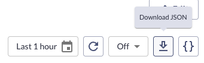
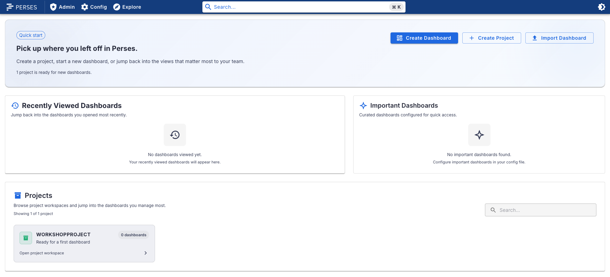

Lab 4 - Exploring Perses dashboards
Lab Goal
To understand what the basic data model is for building dashboards with the Perses project.
Data model - The Perses data model
In the previous lab you explored and made use of the Perses tooling and API. You learned that
you can manage your resources on the Perses platform. These resources have a structure and that
structure is captured in a data model. In this lab you will explore the dashboard resource
data model, learning what is required for a basic dashboard, which will be the foundation to
adding your first visual metrics in the following labs.
Data model - True to Kubernetes (k8s)
The basic data model for a resource is supported in either YAML or JSON formats, keeping in line
with the way we expect to interact with a Kubernetes platform. For this lab we will be working
exclusively with JSON based files and examples, but nothing prevents you from using YAML if you
like.
Data model - The specification layout
The Perses dashboard specification is the standard for creating any resource within
Perses. There are three high level attributes:
KindMetadataSpec
Data model - Kind attribute explained
This attribute is used to state the type of object this resource will be, such as one of
the following:
ProjectDashboardDatasource
Data model - Metadata attribute explained
This attribute is used to identify this resource document and as such has the following
available sub-attributes:
Name- The unique name for this resource documentProject- A name of a project that this resource belongs to
Data model - Specification attribute explained
This attribute defines the specification section where, for example, one of the following
resources would be defined:
Let's dive into the dashboard specification.
Datasource spec- Defining a local datasourceDashboard spec- Defining all aspects of a dashboard
Let's dive into the dashboard specification.
Data model - Exploring the dashboard specification
Dashboard
spec definitions include the following elements:Display- defining a componentnameanddescriptionDuration- defining a default time to look in the past for data (not for all specifications)Variables- defining a list of variables for use in componentsPanels- defining a component to gather data for visualizing on a dashboard using a query of metrics dataLayouts- defining the look, feel, and location of a panel in the dashboard
Data model - Dashboard display section
The
display section defines what you will see (visualization) for a component on
a dashboard and uses the following attributes:Name- defining a component displayed nameDescription- a description of the component
"display": {
"name": "Memory usage",
"description": "My first stat chart!"
},
Data model - Dashboard duration section
The
duration section defines how long in the past data will be gathered for
this item, often used with a variable definition:
"spec": {
(OTHER-DASHBOARD-SPECIFICATIONS)
"duration": "1h"
}
Data model - Dashboard variables section
The
variable section defines a (list) of values used later:
"variables": [
{
"kind": "ListVariable",
"spec": {
"display": {
"name": "instance",
"hidden": false
},
"plugin": {
"kind": "StaticListVariable",
"spec": {
"values": [
{
"label": "localhost:9090",
"value": "localhost:9090"
},
{
"label": "localhost:9100",
"value": "localhost:9100"
}
]
}
},
"name": "instance"
}
},
(OTHER-VARIABLE-SPECIFICATIONS)
Data model - Dashboard panels display section
The
panels section defines panels for dashboards, consists of a
display, a plugin, and a queries
section. Here is an example of the display section:
"panels": {
"Memoryusage": {
"kind": "Panel",
"spec": {
"display": {
"name": "Memory usage",
"description": "My first stat chart!"
},
"plugin": { (PLUGINS-SECTION) },
"queries": [ { (QUERIES-SECTION) } ]
}
}
}, (ANOTHER-PANEL)
Data model - Dashboard panels plugin section
Within the
panels section, here's an example of the plugin section:
"panels": {
"Memoryusage": {
"kind": "Panel",
"spec": {
"display": { (DISPLAY-SECTION) },
"plugin": {
"kind": "StatChart",
"spec": {
"calculation": "last-number",
"format": {
"unit": "decimal"
},
"sparkline": {}
}
},
"queries": [ { (QUERIES-SECTION) } ]
}
}
}, (ANOTHER-PANEL)
Data model - Dashboard panels queries section
Within the
panels section, here's an example of the queries section:
"panels": {
"Memoryusage": {
"kind": "Panel",
"spec": {
"display": { (DISPLAY-SECTION) },
"plugin": { (PLUGIN-SECTION },
"queries": [
{
"kind": "TimeSeriesQuery",
"spec": {
"plugin": {
"kind": "PrometheusTimeSeriesQuery",
"spec": {
"query": "100 - ((go_memstats_sys_bytes{instance='$instance', job='$job'} * 100) /
(go_memstats_alloc_bytes_total{instance='$instance', job='$job'}))"
}
}
}
}
]
}
}
}, (ANOTHER-PANEL)
Data model - Dashboard layouts specification section
The
layouts section describes the individual panels and their locations on
the dashboard:
"layouts": [
{
"kind": "Grid",
"spec": {
"display": {
"title": "Panel Group",
"collapse": {
"open": true
}
},
"items": [
{
"x": 0,
"y": 0,
"width": 12,
"height": 6,
"content": { "$ref": "#/spec/panels/Memoryusage" }
}
]
}
}
]
Data model - Downloading dashboard JSON
The data model you've been exploring here online is also available as a JSON file that you can
download from the UI directly by clicking on the top right download button:

Data model - Viewing dashboard JSON
This file is provided in a raw and unstructured format. Use your favorite editor (ours is VIM
with a plugin to format the JSON) and explore your dashboard file:
$ vim ~/Downloads/MyFirstDashboard.json
{
"kind": "Dashboard",
"metadata": {
"name": "MyFirstDashboard",
"createdAt": "2023-11-28T15:32:17.821847724Z",
"updatedAt": "2023-11-28T15:32:17.821847724Z",
"version": 0,
"project": "WorkshopProject"
},
"spec": {
"display": { "name": "MyFirstDashboard"},
"panels": {
"Memoryusage": {
"kind": "Panel",
"spec": {
"display": {
"name": "Memory usage",
"description": "My first stat chart!"
},
(MORE-DASHBOARD-JSON)
Setup - Getting to my first dashboard
We are now going to apply the things we have learned so far to begin working on our first
dashboard. Open the browser to your Perses instance after our initial setup, as shown below:

Setup - Starting point for next steps
Click on the project
workshopproject, exposing a list of the available
dashboards, getting us to the starting point for the next lab:

Lab completed - Results
Next up, building out your first dashboard...

Contact - are there any questions?
Eric D. Schabell
Director Evangelism
Contact: @ericschabell {@fosstodon.org) or https://www.schabell.org
Director Evangelism
Contact: @ericschabell {@fosstodon.org) or https://www.schabell.org